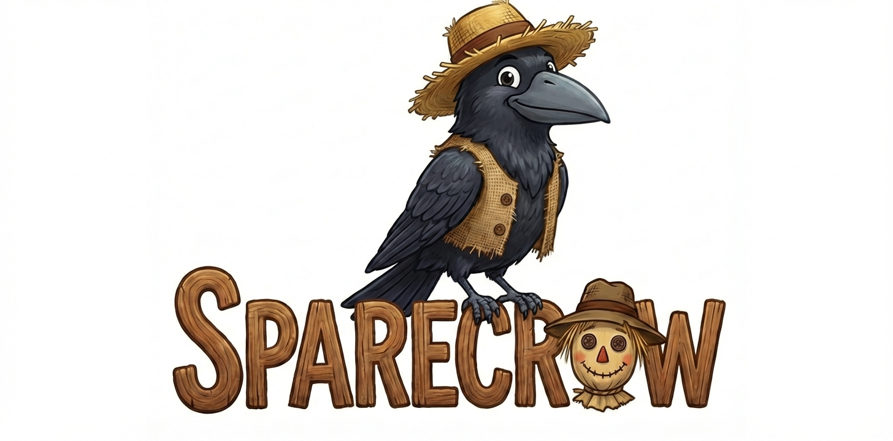
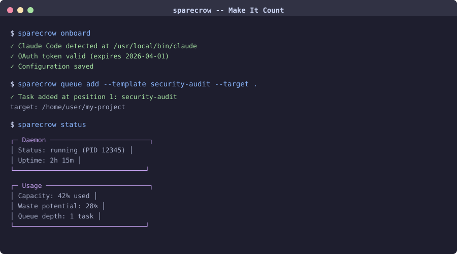

Make Your Claude Code
Subscription Count
A CLI daemon that detects unused Claude Code capacity and automatically runs queued tasks against your repos. Stop leaving subscription quota on the table.

Onboard, queue a security audit, check status — in seconds
Why SpareCrow?
Capacity Intelligence
Monitors your Claude Pro/Team subscription in real time. Calculates waste potential across all model tiers and dispatches tasks only when surplus capacity exists.
Container-Isolated Execution
Every task runs inside a Docker or Podman container with read-only credential mounts, resource limits, and full network isolation. Your code stays safe.
Built-in Templates
Ship with security audits, code reviews, bug hunting, and test generation templates. Create custom prompts or bring your own.
Set It and Forget It
A background daemon polls usage, evaluates triggers, and dispatches tasks automatically. Results land in your repo as structured artifacts.
How It Works
Authenticate
SpareCrow reads your existing Claude Code OAuth token. No extra credentials needed.
Queue Tasks
Add security audits, code reviews, or custom prompts to your task queue targeting any repository.
Auto-Dispatch
The daemon detects spare capacity, spins up a container, and runs the next task. Results appear in your repo.
Ready to put your spare capacity to work?
Install sparecrow and run the setup wizard in under a minute.
Get Started View on GitHub